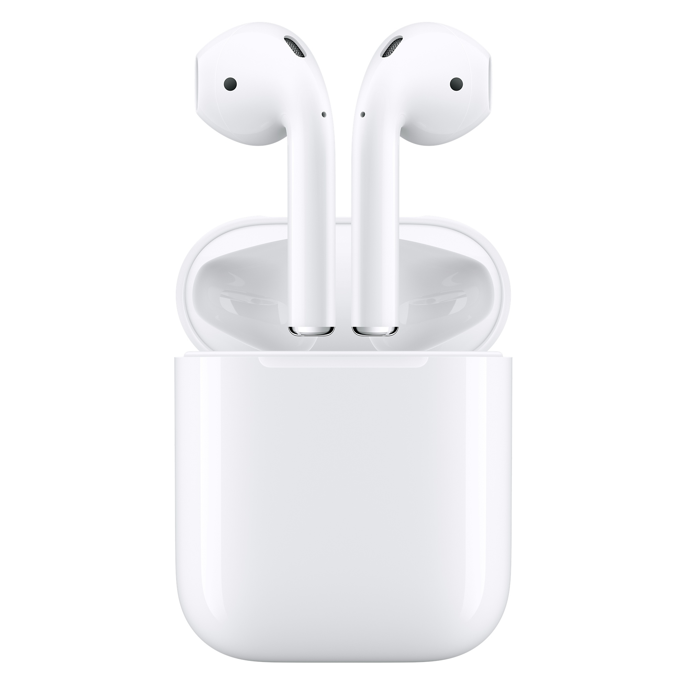
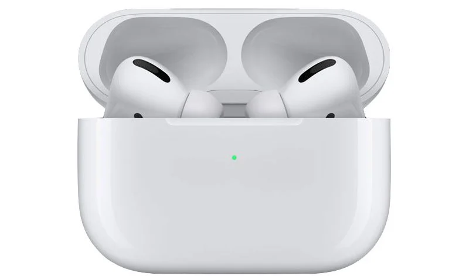

AirPods are wireless Bluetooth earbuds designed by Apple Inc.
They were first announced on September 7, 2016, alongside the iPhone 7.
Within two years, they became Apple's most popular accessory.
They are Apple's entry-level wireless headphones, sold alongside
the AirPods Pro and AirPods Max. In addition to playing audio,
the AirPods contain a microphone that filters out background
noise as well as built-in accelerometers and optical sensors
capable of detecting taps and pinches (e.g. double-tap or pinch
to pause audio) and placement within the ear, which enables automatic
pausing of audio when they are taken out.On March 20, 2019, Apple
released the second-generation AirPods, which feature the H1 chip,
longer talk time, and hands-free "Hey Siri" support. An optional
wireless charging case which costs extra was added in the offerings.On
October 26, 2021, Apple released the third-generation AirPods, which
feature an external redesign with shorter stems similar to AirPods Pro,
spatial audio, IPX4 water resistance, longer battery life, and MagSafe
charging capabili

